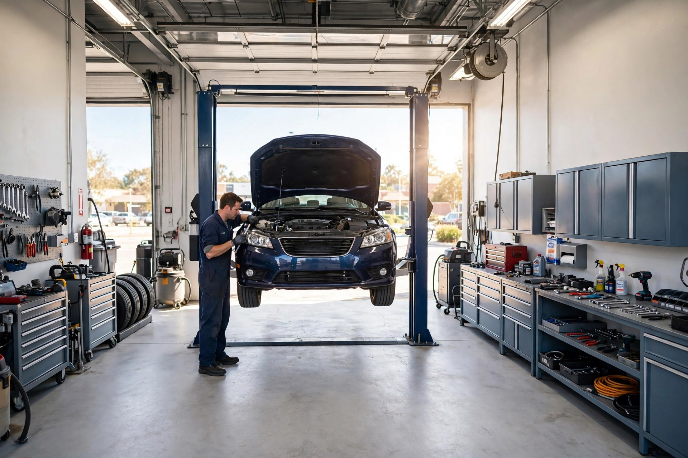
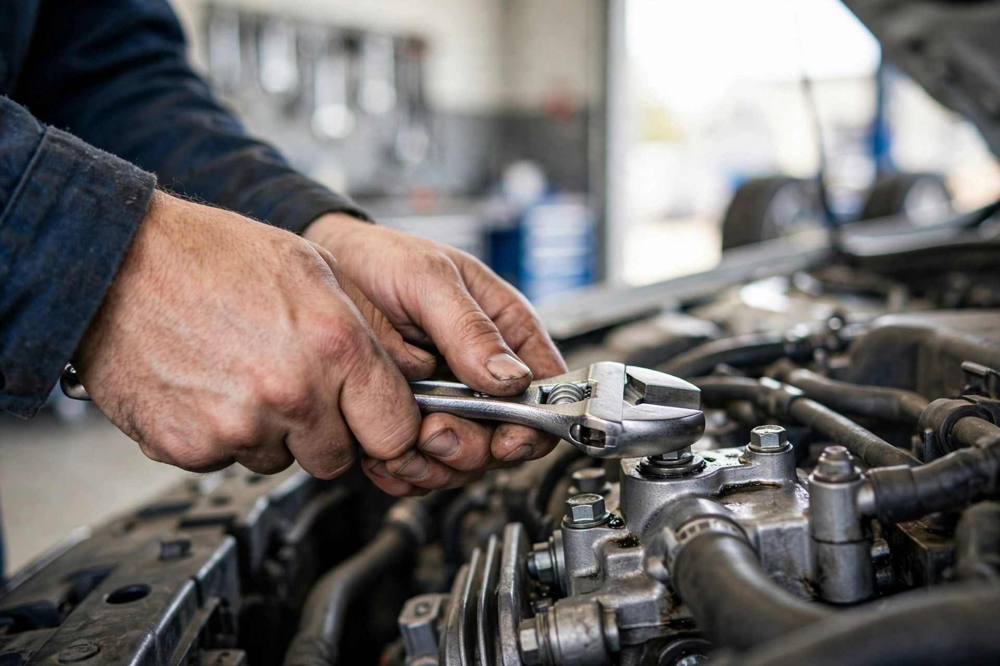
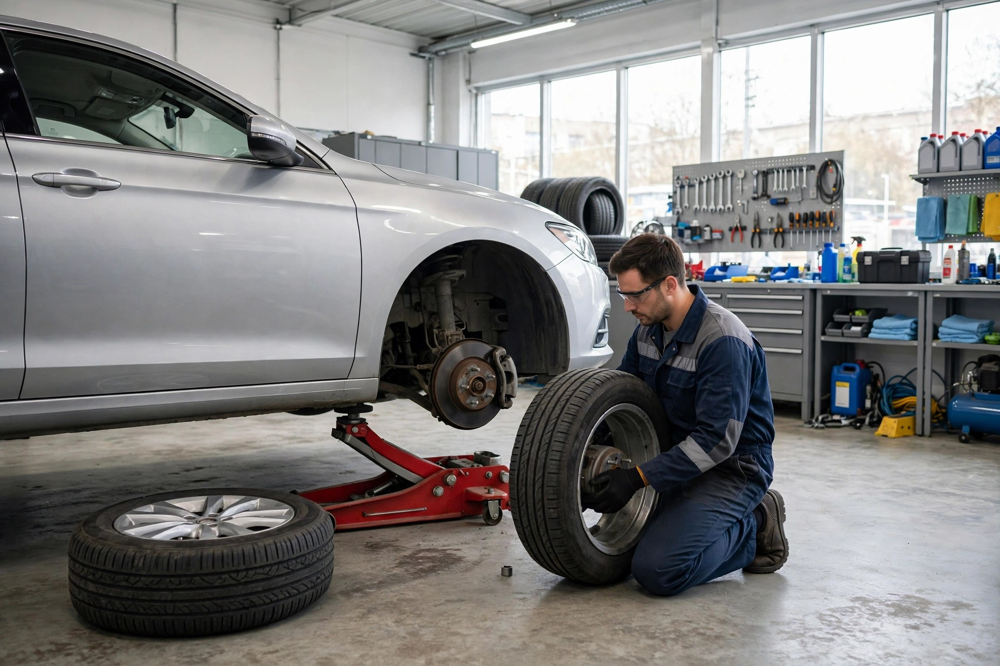
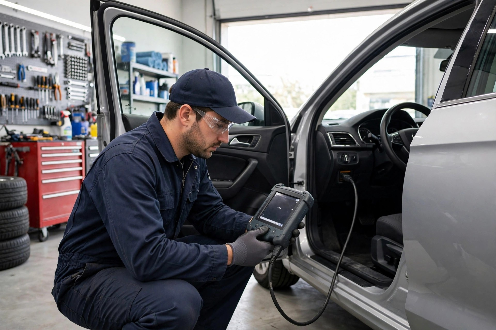

General Auto Repair
Maintenance and repairs for all makes — thorough test drives and inspections with every visit.

Vanier, Ottawa · Auto repair you can trust
Rated 5.0 out of 5 from 104 reviews — owner Dan Touchette fixes what can be fixed, and only replaces what truly needs replacing.
What we do
Maintenance and repairs for all makes — thorough test drives and inspections with every visit.
Pads, rotors and complete brake system inspection — your safety comes first.
We find the real problem with modern diagnostic equipment — visual checks and temperature readings included.
Quick, efficient oil changes with quality lubricants — for all makes and models.
Sales, installation, rotation and balancing — including seasonal changeovers.
Broken down? Call us — in emergencies we respond promptly to get you back on the road with minimal delay.

Why choose us
Owner Dan Touchette built this shop on a simple reputation: honest, skilled, fair-priced repairs. Customers come back because they know he'll fix a part if it can be fixed — and only order a replacement when it's truly needed.
The shop in action


What customers say
Good to know
Call us at (613) 744-4377. In emergency situations we respond promptly to help get you back on the road with minimal delay.
Dan checks whether a part can be repaired before ordering a replacement — jobs get done with fewer parts than dealership quotes, and you pay for what's actually needed.
Yes — cars, SUVs and light trucks of all makes, with quality work and thorough inspections.
Call (613) 744-4377 — we're at 175 Deschamps Ave in Vanier, Ottawa. We reply quickly.